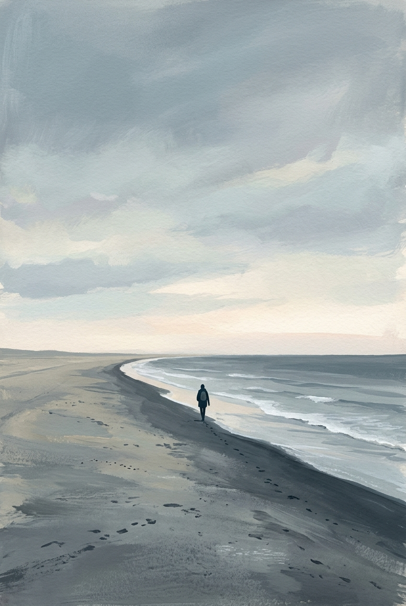
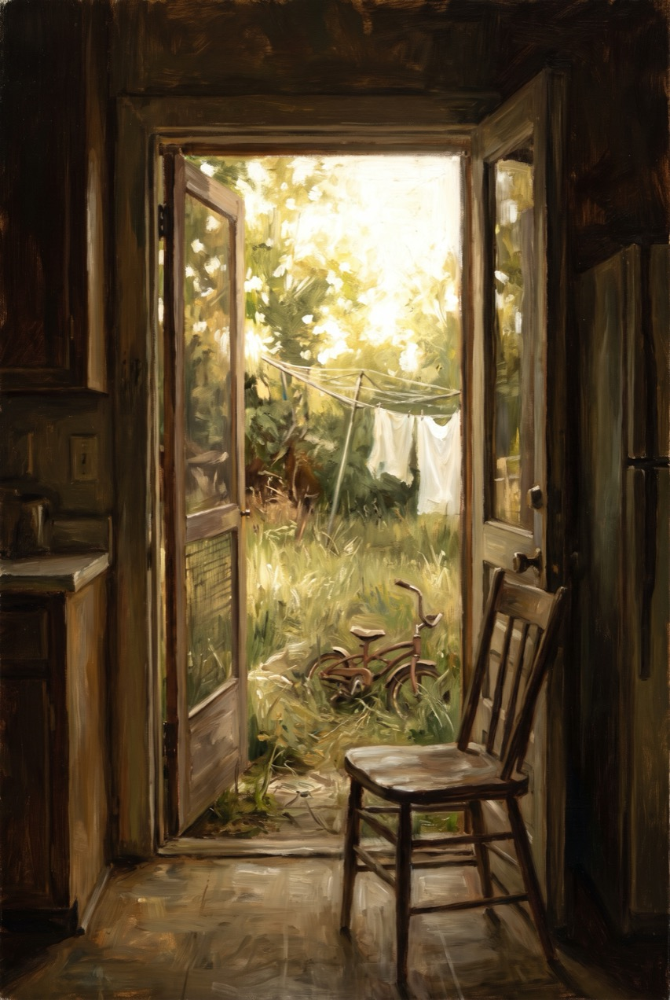

LIVED EXPERIENCE
First-person stories, in the authors' own words
The surface. A collection, not a store-wide badge and not a change to search ranking. Both were considered and retired.
The gate. The author attests. Amazon hosts that statement; it does not certify it.
How a book gets here: the author attests, in their own words, that they lived this story and wrote it. Amazon hosts the author's statement — it doesn't certify it. Translation, including AI translation, is welcome.
-
The Road from Manila
Rosa Delgado✓ Answers reader questions"I left Manila in 1979. I wrote this in Tagalog first, because that is the language I remember it in."★★★★☆(214)kindleunlimited -

The Unseen Memoir
Marion Hale✓ Answers reader questions"I wrote this at my kitchen table over four years, about the year I stopped speaking."★★★★☆(127)kindleunlimited -
Letters Home
Emily Carter"These are my grandmother's letters, and mine. I typed every one of them myself."★★★★☆(2,341)kindleunlimited -
The Last Ninety Acres
Dale Whitcomb✓ Answers reader questions"Four generations farmed this ground. I wrote down the year we lost it, because nobody else was going to."★★★★☆(86)kindleunlimited -
Eleven Addresses
Terrance Boyd✓ Answers reader questions"Eleven places in six years after I got out. I wrote most of this on a library computer, an hour at a time."★★★★☆(438)kindleunlimited -

Loud in Here
Nadia Haddad✓ Answers reader questions"I have been deaf since I was four. This is what a quiet house is actually like from the inside."★★★★☆(309)kindleunlimited -
Sixteen Hundred Miles a Week
Ray Okonkwo"I can't spell to save my life. I talked this book into my phone between Laredo and Toledo."★★★★☆(52)kindleunlimited -
Coming Back Slow
Deborah Aoki✓ Answers reader questions"I had a stroke at fifty-one. Relearning to write took two years. This book took four."★★★★★(1,608)kindleunlimited